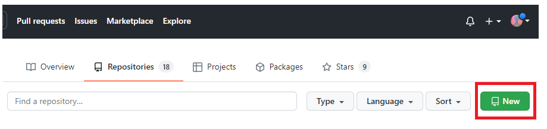
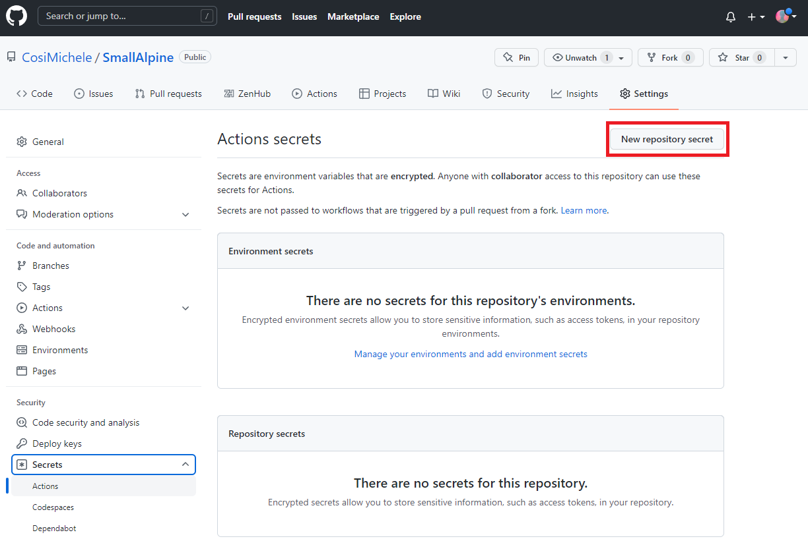
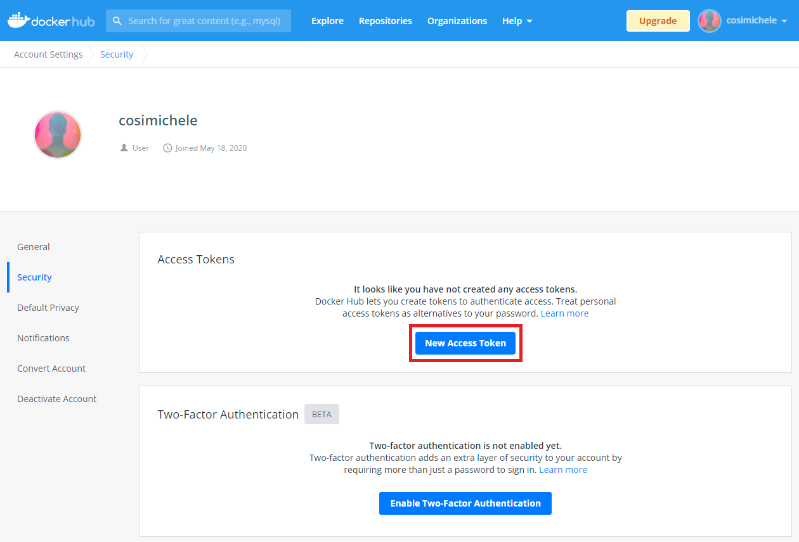
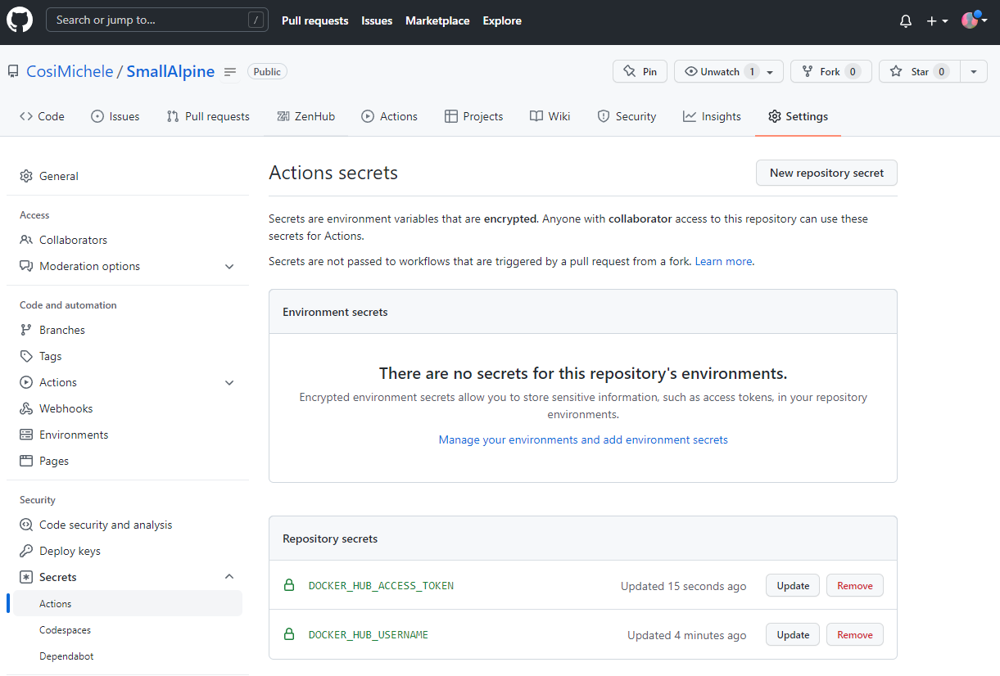
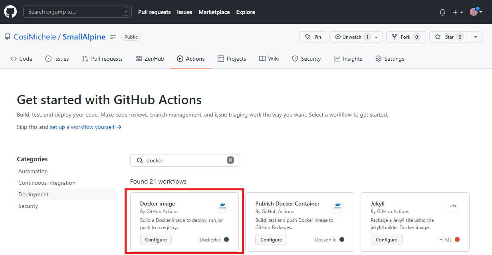
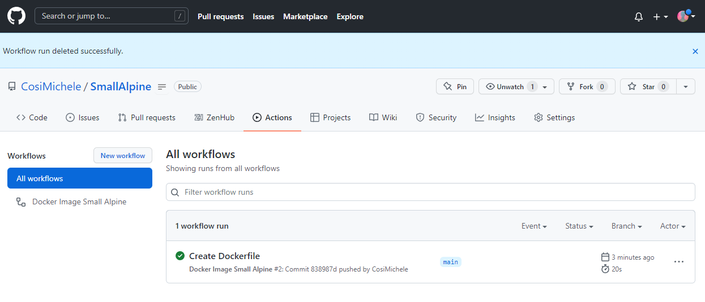
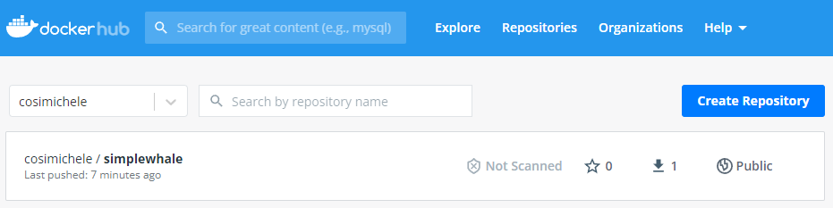
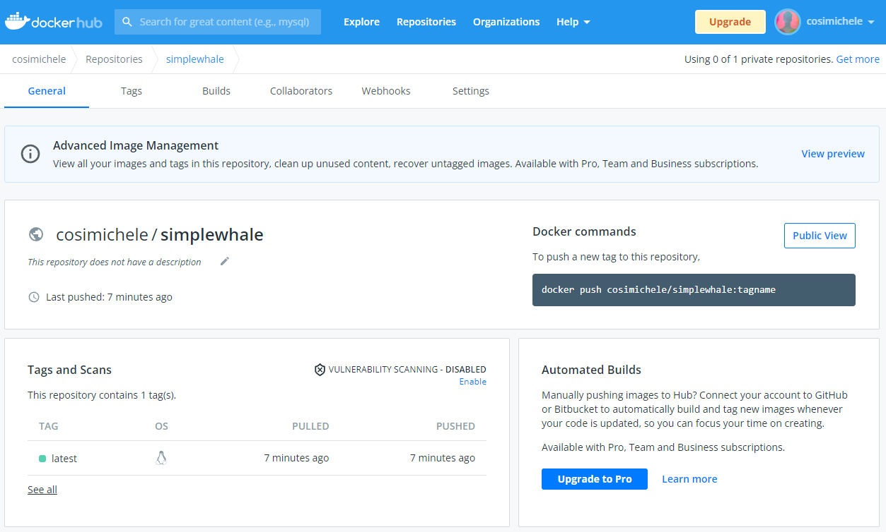
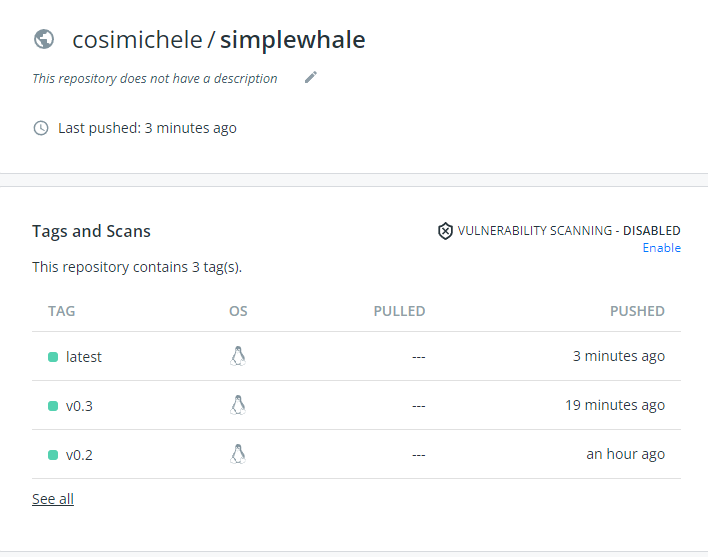

GitHub Actions and Docker¶
GitHub Actions is a feature that allows automation and execution of workflows invoved in the development of your software and code. Read more on GitHub Actions at the offical GitHub Docs page.
Actions can also be used to create and manage your Docker Images.
Here you will learn how to can create Actions which build and then push images from GitHub to a Docker Registry of your choice.
Prerequisites¶
Setting up a Git Repository with Actions for Docker¶
CI/CD Terminology
- continuous integration builds, tests, and automatically accepts changes to code in a repository
- continuous delivery delivers code changes to production-ready environments
- continuous deployment does just that, it deploys changes to the code
-
CI pipeline compiles code, tests it, and makes sure all of your changes work. It should run whenever there is a change (push) to the repository
-
CD pipeline goes one step further and deploys new code into production.
We are focusing on GitHub, but there are other platforms which you can explore for building and pushing containers to registries
These include GitLab Runners
Other types of Continuous Integration are used on code repositories to ensure that code stays functional.
Create a GitHub Repository¶
Navigate to your GitHub Account and select New;

Creating README, LICENSE, & .gitignore
When you create your new git repository you are asked to create a README, a LICENCE, and a .gitignore file.
Go ahead and create all three of these, as they are useful and fundamental to making your repository reproducible.
README -- we want to use the README to help future-us when we revisit this repository. Make sure to include detailed instructions
LICENSE -- pick a license which is useful for your specific software use case.
.gitignore -- use a file which will keep docker project files isolated
.gitignore example
# Docker project generated files to ignore
# if you want to ignore files created by your editor/tools,
# please consider a global .gitignore https://help.github.com/articles/ignoring-files
.vagrant*
bin
docker/docker
.*.swp
a.out
*.orig
build_src
.flymake*
.idea
.DS_Store
docs/_build
docs/_static
docs/_templates
.gopath/
.dotcloud
*.test
bundles/
.hg/
.git/
vendor/pkg/
pyenv
Vagrantfile
In the repository, create two nested folders required for a Docker Actions project:
- A
.github/workflowsfolder: containing required necessaryymlfiles that build the containers through GitHub;
In the workflows folder, we're going to add a .yml
In the main repository, along with the README and LICENCE file, create another folder called /docker
In the /docker folder we're going to put the Dockerfile file necessary to build the image.
Link your GitHub and Docker accounts¶
Ensure you can access Docker Hub from any workflows you create:
- Add your Docker ID as a secret to GitHub. Navigate to your GitHub repository and click Settings > Secrets > New secret.

2. Create a new secret with the name DOCKER_HUB_USERNAME and your Docker ID as value.
3. On DockerHub, create a new Personal Access Token (PAT). To create a new token, go to Docker Hub Settings and then click New Access Token. Name it, and copy the newly generated PAT.
Tip
Name your Docker Hub Access token the same name as your GitHub repository, it will help with keeping track which GitHub repository is related to which Docker image.

- On GitHub, return to your repository secrets, and add the PAT as a secret with the name
DOCKER_HUB_ACCESS_TOKEN.

Setting up a GitHub Action Workflow¶
Now that you have connected your GitHub repository with your Docker account, you are ready to add the necessary files to your repo.
Note
In this example, we will use the existing Docker Image Alpine.
1. In your GitHub repository, create a file and name in Dockerfile; In the first line of your Dockerfile paste:
2. Click the Actions tab and in the search bar, search for docker. Select the docker image workflow (as shown in the image below)
Note
This will create the `.github/workflows` repository and necessary `yml` file required for the GitHub actions.

3. You will be prompted to the docker-image.yml file; paste the following code, and commit your changes.
name: Docker Image Small Alpine
on:
push:
branches: [ main ]
pull_request:
branches: [ main ]
jobs:
build:
runs-on: ubuntu-latest
steps:
-
name: Checkout
uses: actions/checkout@v2
-
name: Login to Docker Hub
uses: docker/login-action@v1
with:
username: ${{ secrets.DOCKER_HUB_USERNAME }}
password: ${{ secrets.DOCKER_HUB_ACCESS_TOKEN }}
-
name: Build and push
uses: docker/build-push-action@v2
with:
context: .
file: ./Dockerfile
push: true
tags: ${{ secrets.DOCKER_HUB_USERNAME }}/simplewhale
Note
Github will show you when a workflow is building:
- An orange dot next to your commit count means that the workflow is running;
- A crossed red circle means that your workflow has failed;
- A green check means your workflow ran successfully.

5. Navigate to your Docker Hub to see your GitHub Actions generated Docker image.


Tagging a Pushing an Image¶
When updating your own Docker Images, you may want to tag the images with a version number.
In this example, we update our Alpine Docker Image to a newer version and adding a package.
Navigate to your Dockerfile and modify it by adding the following lines:
FROM alpine:3.15
LABEL author="<name>"
LABEL email="<email>"
LABEL date_created="<date>"
RUN apk update && apk upgrade --available
RUN apk add vim fortune
ENV PATH=/usr/games:${PATH}
ENV LC_ALL=C
ENTRYPOINT fortune
Save, and navigate to the github action (.github/workflows/docker-image.yml). The last line should be tags, edit the line to reflect the version you would like to add.
Warning
- To correctoy add a tag, add a colon followed by a version number such as
<name of container>:<version number>. - If there is no tag, the version pushed will default to
latest. - Remember to update/change the tag line in future pushes.
Add, commit, push your changes; You will see your Docker Image being built with the added tagged version.
